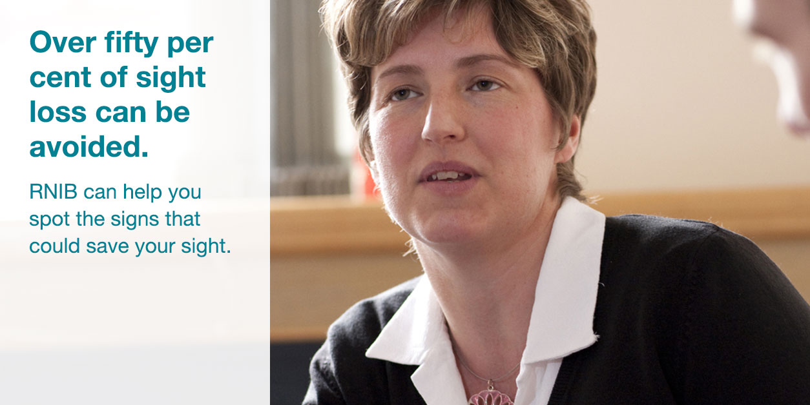
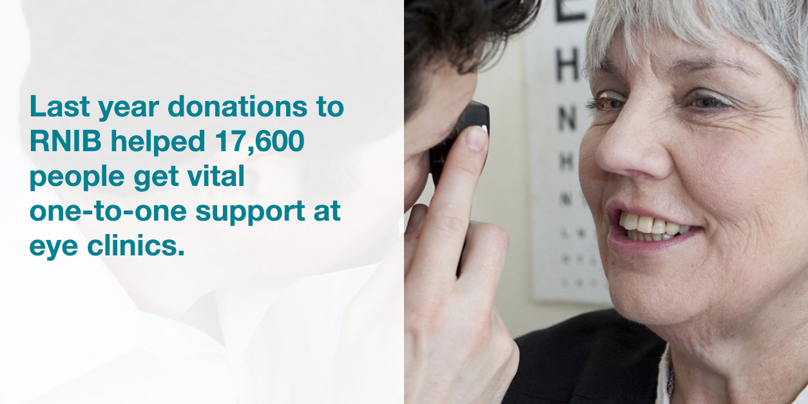

Save your sight Spot the signs
Age-related macular degeneration (AMD) can destroy your sight in just three months. If you're over 50, you're most at risk. RNIB can help you spot the signs of AMD and other eye diseases.
Download the information pack
Download the fact sheet .pdf fileSigns and symptoms of AMD
Symptoms vary, but usually the first problems you'll notice are your ability to see detail. You may experience some or all of the following:

Blurred vision
Your peripheral vision is not affected and you won't feel any pain, but the centre of your vision is increasingly unclear.

Distorted vision
Straight lines appear to be wavy, curved or distorted. The centre of your vision is most affected.

Unclear vision
Small print becomes difficult to read even when wearing reading glasses.
About the RNIB
- 
-

- 
-

Every day 100 people in the UK start to lose their sight. For some people, it's a gradual process. For others, it happens overnight. For all, it is life changing. At RNIB we're there for you, every step of the way.
Every day 100 people in the UK start to lose their sight. For some people, it's a gradual process. For others, it happens overnight. For all, it is life changing. At RNIB we're there for you, every step of the way.
We help people who have lost their sight continue to do the everyday things they love. We help them see themselves and their future in a more positive light. We campaign and work in partnerships to create a fairer, more inclusive society.
None of this would be possible without generous donations from the public. Help us reach everyone who needs us, every step of the way. Donate now (New Window).
AMD App
Our free AMD app uses your phone's camera to show you the different stages of AMD. It also gives you expert information about AMD. It's available for iPhone and iPad users only at the moment, from the App Store
Save your sight Spot the signs
AMD isn't the only eye condition that can affect your sight, particularly if you're aged over 50. Our eye health pack will help you spot the signs and understand what treatments are available. There is also information about eye health (New Window) and emotional support (New Window) on RNIB's website, or you can call us on 0303 123 9999.
Download the fact sheet .pdf file